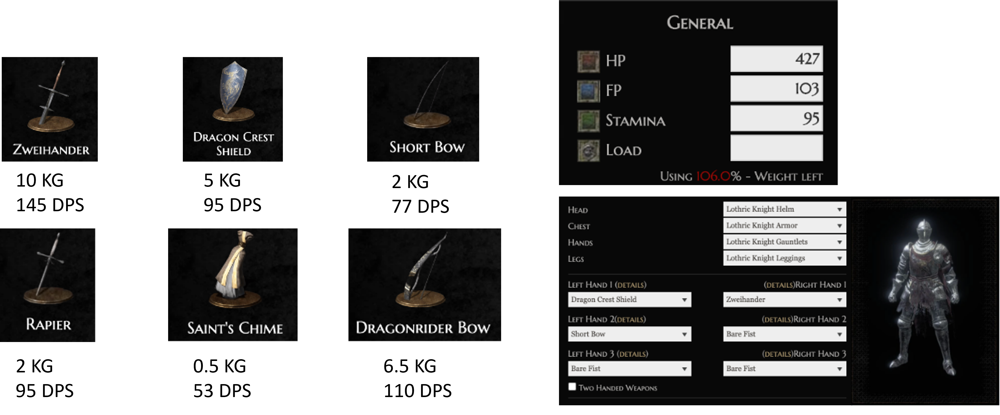
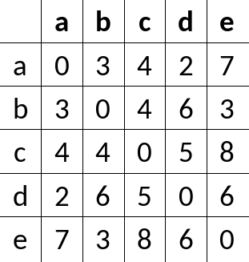
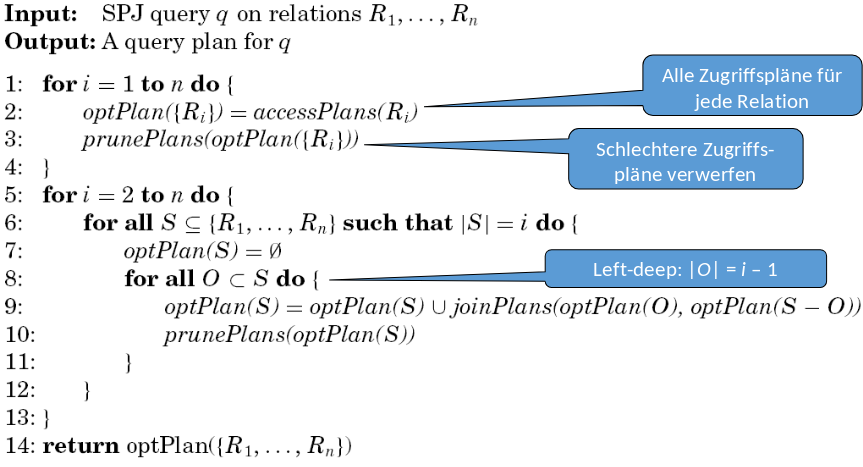

5. Optimierung#
Im Fokus dieses Kapitels steht die Optimierung auf logischer Ebene, wobei es eher um die Daten selbst geht und weniger um die Speicherabbildung.
5.1. Wiederholung: Anfragebearbeitung#
Bevor die Details der Optimierung vertieft werden, lohnt es sich, einen erneuten Blick auf die Anfragebearbeitung zu werfen, insbesondere im Kontext des Grundproblems und des Ablaufs.
5.1.1. Grundproblem#
Anfragen in SQL und der Relationalen Algebra sind deklarativ. Solche Anfragen müssen in ausführbare (prozedurale) Form transformiert werden. Also in echte ausführbare Programme. Die Ziele dabei sind ein “QEP” (prozeduraler Query Execution Plan) und Effizienz. Eine Anfrage soll schnell sein und wenige Ressourcen verbrauchen (CPU, I/O, RAM, Bandbreite).
5.1.2. Ablauf der Anfragebearbeitung#
Parsing Als erstes wird die Anfrage geparsed und überprüft, ob diese syntaktisch korrekt ist. Danach werden die Elemente semantisch überprüft und ein Parsebaum erstellt.
Wahl des logischen Anfrageplans Im zweiten Schritt werden exponentiell viele Bäume mit logischen Operatoren erstellt. Darunter wird der optimale Plan ausgewählt, indem vorher logisch, regelbasiert und kostenbasiert optimiert wird.
Wahl des physischen Anfrageplans Anhand des logischen Plans wird ein ausführbares Programm mit physischen Operatoren erstellt. Das Programm enthält Algorithmen und Scan-Operatoren. Der optimale Plan wird physisch optimiert und dann ausgewählt. Zum Schluss wird der ausgewählte Anfrageplan ausgeführt.
Fig. 5.1 Ablauf der Anfragebearbeitung#
5.2. Ablauf der Anfragebearbeitung#
Die einzelnen Schritte bei der Anfragebearbeitung werden nun genauer betrachtet.
5.2.1. Parsing#
Beginnend beim Parsing wird auf syntaktische Korrektheit überprüft. Dafür wird eine Grammatik für einen Teil von SQL betrachtet. (SFW steht für SelectFromWhere):
Anfragen
<Anfrage> :: = <SFW>
<Anfrage> :: = ( <SFW> )
die Mengenoperatoren fehlen
SFWs
<SFW> ::= SELECT <SelListe> FROM <FromListe> WHERE <Bedingung>
die Gruppierung, Sortierung etc. fehlen
Listen
<SelListe> ::= <Attribut>, <SelListe>
<SelListe> ::= <Attribut>
<FromListe> ::= <Relation>, <FromListe>
<FromListe> ::= <Relation>
Bedingungen
<Bedingung> ::= <Bedingung> AND <Bedingung>
<Bedingung> ::= <Tupel> IN <Anfrage>
<Bedingung> ::= <Attribut> = <Attribut>
<Bedingung> ::= <Attribut> LIKE <Muster>
<Tupel>, <Attribut>, <Relation> und <Muster> sind nicht durch eine grammatische Regel definiert
Die vollständige Grammatik kann man zum Beispiel hier finden.
Anschließend wird während der Übersetzung die semantische Korrektheit überprüft. Beantwortet werden dabei generell Fragen wie:
Existieren die Relationen und Sichten der FROM Klausel?
Existieren die Attribute in den genannten Relationen? Sind sie eindeutig?
Sind die Typen für die Vergleiche korrekt?
Ist die Aggregation korrekt?
Fig. 5.2 Ablauf der Anfragebearbeitung - Parsen#
5.3. Algebraische Transformationsregeln#
Das Ziel ist es aus dem Parsebaum einen logischen Anfrageplan zu erstellen. Ohne die Semantik der Anfrage zu ändern, soll sie in eine interne Darstellung verwandelt werden. Um die Anfrage effizienter auszuführen, sollen insbesondere kleine Zwischenergebnisse erzielt werden. Am Ende sollen es äquivalente Ausdrücke sein. Zwei Ausdrücke der relationalen Algebra heißen äquivalent, falls sie die gleichen Operanden (=Relationen) nutzt und für jede mögliche Instanz der Datenbank stets die gleiche Antwortrelation ausgibt.
Fig. 5.3 Ablauf der Anfragebearbeitung - Transformation#
5.3.1. Kommutativität und Assoziativität#
Die Gesetze gelten jeweils für Mengen und Multimengen. Die verwendeten Ausdrücke können in beide Richtungen verwendet werden.
? ist kommutativ und assoziativ
R ? S = S ? R
(R ? S) ? T = R ? (S ? T)
∪ ist kommutativ und assoziativ
R ∪ S = S ∪ R
(R ∪ S) ∪ T = R ∪ (S ∪ T)
∩ ist kommutativ und assoziativ
R ∩ S = S ∩ R
(R ∩ S) ∩ T = R ∩ (S ∩ T)
⨝ ist kommutativ und assoziativ
R ⨝ S = S ⨝ R
(R ⨝ S) ⨝ T = R ⨝ (S ⨝ T)
5.3.2. Weitere Regeln#
Für Selektionen und Projektionen gelten die folgenden Regeln:
Selektion σ
\(σ_{c_1 ∧ c_2}(R) = σ_{c_1}(σ_{c_2}(R))\)
\(σ_{c_1 ∨ c_2}(R) = σ_{c_1}(R) ∪ σ_{c_2}(R)\)
nicht bei Multimengen
\( σ_{c_1}(σ_{c_2}(R)) = σ_{c_2}(σ_{c_1}(R))\)
\( σ_{c}(R Φ S) ≡ (σ_{c}(R)) Φ (σ_{c}(S))\)
Φ ∈ {∪, ∩, -, ⨝}
\( σ_{c}(R Φ S) ≡ (σ_{c}(R)) Φ S\)
Φ ∈ {∪, ∩, -, ⨝}
Falls sich c nur auf die Attribute in R bezieht.
Projektion π
\(π_{L}(R ⨝ S) = π_{L}(π_{M}(R) ⨝ π_{N}(S))\)
\(π_{L}(R ⨝_{C} S) = π_{L}(π_{M}(R) ⨝_{C} π_{N}(S))\)
\(π_{L}(R × S) = π_{L}(π_{M}(R) × π_{N}(S))\)
\(π_{L}(σ_{c}(R)) = π_{L}(σ_{c}(π_{M}(R))\)
5.4. Logische Anfragepläne#
Um nun zu einem logischen Anfrageplan zu gelangen, benötigt es zwei Schritte.

Fig. 5.4 Ablauf der Anfragebearbeitung - Logischer Anfrageplan#
5.4.1. Zwei Schritte#
Schritt 1 In Schritt 1 wird der Parsebaum in einen Ausdruck der relationalen Algebra übersetzt und dann wieder als Baum dargestellt. Unter anderem werden auch Subanfragen aufgelöst. Letzteres wird aber nicht in dieser Vorlesung weiter thematisiert.
Schritt 2 Der Baum wird im zweitem Schritt gemäß der Transformationsregeln umgeformt. Man kann auch “Vor-Optimierungen” mittels Heuristiken durchführen. Dazu zählt unter Anderem:
das Pushen von Selektionen,
das Einbauen und Pushen von Projektionen,
das Zusammenfügen von Selektion und Kreuzprodukt zu einem Join,
die Gruppierung von Vereinigungen und Joins,
und eventuell das Verschieben und Einbauen von Duplikateliminierungen.
5.4.2. Beispiel - Anfragebearbeitung#
In diesem Beispiel ist ein Ausdruck der relationalen Algebra in einem Parsebaum dargestellt (siehe Fig. 5.5) . Die zugehörige SQL-Anfrage wäre
SELECT Nachname
FROM mitarbeiter m, projekte p
WHERE p.Budget < 40000
AND m.p_id = p.p_id;
Man sollte damit beginnen das Kreuzprodukt mit der Selektion zu einem Join zu kombinieren.
Fig. 5.5 Beispiel Parsebaum zur SQL-Anfrage - Schritt 1#
Als nächstes sollte man versuchen die andere Selektion weiter nach unten zu pushen (Push-Down). Ziel ist es mit möglichst wenigen Tupeln in jedem Teilschritt zu arbeiten. Die gegebene Selektion kann direkt vor die Projekt-Relation geschoben werden.
Fig. 5.6 Schrittt 2#
In einem weiterem Schritt können die benötigten Attribute aus den Ausgangsrelationen direkt rausprojiziert werden.
Fig. 5.7 Schritt 3#
5.4.3. Übergang zum Physischen Anfrageplan#
Hierbei gibt es diverse Freiheitsgrade:
Die Reihenfolge und Gruppierung von assoziativen und kommutativen Operatoren können vertauscht werden. Das ist zum Beispiel der Fall bei Joins, Vereinigungen und Schnittmengen.
Für jeden Operator kann ein Algorithmus gewählt werden. Damit sind die aus dem vorherigen Kapitel kennengelernten Hash-basierten, Sort-basierten oder auch One-Pass Algorithmen gemeint.
Es können zusätzliche Operatoren (Sort und Projektion), die im logischen Plan selbst nicht auftauchen, hinzugefügt werden.
Außerdem kann der Modus des Datentransports zwischen den Operatoren gewählt werden. Modi wären eine temporäre Tabelle oder eine Pipeline mit Iterator.
Dafür braucht man in jedem Fall zunächst eine Kostenabschätzung. Man möchte herausfinden, wann es sinnvoll ist, welche Operationsreihenfolgen zu nutzen und wie viel ein Plan gesamt kostet.
5.5. Kostenmodell#
Beim Kostenmodell werden die Kardinalitäten abgschätzt. Man möchte wissen wie viele Tupel es gibt und wie viele unterschiedliche Werte in den einzelnen Attributen einer Relation vorhanden sind.
Fig. 5.8 Ablauf der Anfragebearbeitung - Kardinalitäten schätzen#
5.5.1. Kostenbasierte Optimierung (Wiederholung)#
Konzeptionell werden alle denkbaren Ausführungspläne generiert. Die Kosten für jeden Plan werden anhand eines Kostenmodells bewertet. Dazu werden Statistiken und Histogramme hinzugezogen. Die Parameter werden anhand der Rechnerarchitektur, auf der die Datenbank aufgesetzt ist, kalibriert. Die Optimierung ist abhängig vom verfügbaren Speicher. Dann wird anhand des Aufwands-Kostenmodell geschaut was und wie optimiert werden soll. Entweder Durchsatz maximierend oder nicht Antwortzeit-minimierend. Entsprechend wird der günstigste Plan ausgeführt. Wichtig ist, dass nicht zu lange optimiert wird, da sich sonst der ganze Aufwand nicht lohnen könnte.
5.5.2. Problemgröße (Suchraum) (Wiederholung)#
Wie zuvor erwähnt, werden konzeptionell alle denkbaren Ausführungspläne generiert. Man berechnet nun die Bushy-Pläne mit n Tabellen. Bushy-Plan bedeutet, dass der Baum immer balanciert ist.
n |
\(2^n\) |
n! |
\(\frac{(2(n-1))!}{(n-1)!}\) |
|---|---|---|---|
2 |
4 |
2 |
2 |
5 |
32 |
120 |
1680 |
10 |
1024 |
3628800 |
1,76 · 10^10 |
20 |
1048576 |
2,4 · 10^18 |
4,3 · 10^27 |
Die Anzahl der Deep-Pläne mit n Tabellen ist n!. Die Plankosten unterscheiden sich um viele Größenordnungen. Das Optimierungsproblem ist NP-hard (NP-Schwer).
Folie: Prof. Alfons Kemper, TU München.
5.5.3. Kostenmodell (Wiederholung)#
Gegeben ist ein algebraischer Ausdruck z.B. ein Anfrageplan. Das Kostenmodell (siehe Fig. 5.9) schätzt die Ausführungskosten für diesen Ausdruck. Im Kostenmodell werden Punkte wie die Indexinformationen, die Ballungs-Informationen (Clustering on disk), die DB-Kardinalitäten und die Attributverteilungen berücksichtigt.
Fig. 5.9 Kostenmodell#
5.5.4. Statistiken (Wiederholung)#
Man kann unterschiedliche Statistiken für das Kostenmodell nutzen. Für die Statistiken kann man verschiedene Werte berücksichtigen. Zu jeder Basisrelation gibt es die Anzahl der tupel und die Größe der einzelnen Tupel. Zu (jedem) Attribut gibt es den minimalen und maximalen Wert, eine Werteverteilung (Histogramm) und die Anzahl der distinct Werte. Zum System sind die Speichergröße, die Bandbreite, I/O- und CPU-Zeiten angegeben.
Das eigentliche Problem ist das Erstellen und Updaten der Statistiken. Wenn man eine Datenbank hat, die sich sehr schnell immer wieder verändert, müssen die Statistiken dazu auch häufig neu erstellt werden (runstats()). Dies kostet weitere Ressourcen. Man sollte sich überlegen wie genau man die Statistiken haben möchte und dementsprechend viel Zeit in das Optimieren investieren. Aus diesem Grund initiiert man meist nur explizit/manuell die Erstellung und das Update der Statistiken.

Fig. 5.10 Histogramm über die Ankünfte#
5.5.5. Kosten von Operationen#
Das wesentliche Kostenmerkmal bei Operationen ist die Anzahl der Tupel im Input. Insbesondere ist die Frage, ob die Relation in den Hauptspeicher passt und man darauf Operationen wie Selektion, Projektion, Sortierung und Join ausführen kann. Der Output ist immer der Input des nächsten Operators. Deshalb schätzt ein Kostenmodell unter anderem für jede Operation die Anzahl der Ausgabetupel. Zum Schätzen wird die „Selektivität“ in Bezug auf Inputgröße herangezogen. Sie gibt an wie viele Eingabetupel ein Operator herausselektiert und wie viele Ausgabetupel dann erwartet werden können. Es wird auch „Selektivitätsfaktor“ (selectivity factor, sf) genannt.
#Ausgabetupel = #Eingabetupel x Selektivität
5.5.6. Kostenschätzung - Projektion#
Die Größe des Zwischenergebnisses kann bei der Projektion exakt ausgerechnet werden. Beispiele Gegeben ist eine Relation R(A integer(4), B integer(4), C varchar(100)) mit einem Tupelheader von 12 Byte.
1: Somit ergeben sich insgesamt 120 Byte pro Tupel. Ein Block besteht aus 1024 Byte mit einem 24 Byte Header. Also sind es 8 Tupel pro Block. Bei einer Relation R mit 10000 Tupeln: \(T(R)\) = 10000, kommt man bei 8 Tupeln pro Block, auf insgesamt 1250 Blöcke, die benötigt werden: \(B(R)\) = 1250.
2: \(Q_{1} = \pi_{A+B,C}(R)\) Daraus ergeben sich 116 Byte pro Tupel. Bei 8 Tupeln pro Block hat man wieder 1250 Blöcke pro Tupel: \(B(Q_{1})\) = 1250.
3: \(Q_{2} = \pi_{A,B}(R)\) Man erhält 20 Byte pro Tupel. Insgesamt also 50 Tupel pro Block und \(B(Q_{2})\) = 200.
5.5.7. Kostenschätzung - Selektion#
Im Gegensatz zur Projektion bleibt zwar die Tupelgröße, aber die Anzahl der Tupel sinkt bei der Selektion.
\(Q=\sigma_{A=c}(R)\)
Die Formel zur Selektion zeigt einen Vergleich zwischen dem Attribut A und der Konstante c. Basierend auf Annahmen kann man die Anzahl der Ausgabetupel berechnen. Die erste Annahme ist, dass die Werte gleich verteilt sind. Die zweite, dass c einer dieser Werte ist. Zur Berechnung nutzt man die Formel \(T(Q) = \frac{T(R)}{V(R,A)}\). \(V(R,A)\) ist die Anzahl der distinct Werte in Spalte A. D.h. der Selektivitäsfaktor ist \(\frac{1}{V(R,A)}\). Bessere Abschätzungen sind mittels Histogrammen möglich.
\(Q=\sigma_{A<c}(R)\)
Der Vergleich der Selektion A < c macht eine Bereichsabfrage. Es gibt Möglichkeiten dies genau abzuschätzen. Einfachheitshalber nutzen wir hier eine erste Abschätzung: \(T(Q) = \frac{T(R)}{2}\). Typischer ist die Formel \(T(Q) = \frac{T(R)}{3}\).
\(Q=\sigma_{A \neq c}(R)\) Man möchte in der Selektion nicht die Attribute haben, die der Konstante c entsprechen. Eine erste einfache Abschätzung wäre es davon auszugehen, dass man (fast) alles zurückbekommt: \(T(Q) = T(R)\). Etwas genauer ist stattdessen die Formel \(T(Q) = \frac{T(R) · (V(R,A) - 1)}{V(R,A)}\). Sie ist sehr ähnlich zu der ersten Formel vom Vergleich (\(Q=\sigma_{A=c}(R)\)). Der Unterschied besteht darin, dass sie nicht alle Tupel zurückgibt, die gleich der Konstante sind, sondern genau das Gegenteil: Alle Tupel, die ungleich der Konstante sind.
Hat man Konjunktionen bei mehreren Selektionsbedingungen, multipliziert man die Selektivitätsfaktoren. Die Annahme dafür ist die Unabhängigkeit der Bedingungen.
5.5.8. Selektivität schätzen#
In Abbildung 5.11 ist ein Auszug aus dem Werk für das System R von Selinger et al. aus dem Jahre 1979 zu sehen. Man sieht die Möglichkeiten zur Einschätzung der Selektivität. Beim Schätzen wird fast immer eine Gleichverteilung angenommen.
Fig. 5.11 Auszug aus dem Werk von Selinger et al.#
5.5.9. Beispiel für Skew: Zipf-Verteilung#
Fig. 5.12 George Kingsley Zipf#
Eine sehr bekannte Verteilung ist die Zipf-Verteilung von George Kingsley Zipf (1902 - 1950). Sie modelliert Worthäufigkeiten in den Texten einer Sprache. Die Wörter werden nach ihren Häufigkeiten sortiert. Die Häufigkeit des häufigsten Wortes sei dabei h. Wenn alles sortiert ist kann man beispielsweise für den i-ten Wert die Häufigkeit berechnen. Der i-te Wert tauch dann genau \(\frac{h}{i^{\frac{1}{2}}}\) mal auf. Der zughörige Graph sieht wie folgt aus:
Fig. 5.13 Skew Graph#
Wenige Werte kommen sehr häufig vor, die vielen anderen Werte kommen hingegen sehr selten vor. Anhand der Verteilung könnte man nun probieren die Kardinalitätsabschätzung anzupassen. Dennoch sollte es eher gelassen werden. Die durchschnittliche Antwortkardinalität bleibt weiter \(\frac{T(R)}{V(R,A)}\). Durch die Annahme, dass Konstanten in Selektionsbedingungen gleichverteilt gewählt werden, kann es bei der Zipf-Verteilung der Konstanten zu einer Unterschätzung kommen.
Abbildung 5.14 zeigt das Prinzip von Zipf’s law. Außerdem ist es unabhängig von der jeweils gewählten Sprache.
Fig. 5.14 Zipfs Law#
A plot of the rank versus frequency for the first 10 million words in 30 Wikipedias (dumps from October 2015) in a log-log scale.
5.5.10. Kostenschätzung - Selektion#
Beispiele Gegeben ist eine Relation R mit \(T(R) = 10000\) und \(V(R,A) = 50\).
1: \(Q = \sigma_{A=10 ∧ B<20}(R)\) Die Ausgabetupel werden geschätzt mit \(T(Q) = 10000 · \frac{1}{50} · \frac{1}{3} = 67\).
2: \(Q = \sigma_{A=10 ∧ A>20}(R)\) Im ersten Moment würde man die Ausgabetupel mit \(T(Q) = 10000 · \frac{1}{50} · \frac{1}{3} = 67\) schätzen. Bei genauerer Betrachtung fällt auf, dass die Bedingung so nicht möglich ist. Das Attribut kann gleichzeitig nicht genau 10 und über 20 sein. Besser ist die Abschätzung \(T(Q) = 0\). Ein Optimierer sollte solche Fälle erkennen.
5.5.11. Kostenschätzung - Selektion mit Disjunktion#
\(Q = \sigma_{C_1 ∨ C_2}(R2)\)
Idee 1 Bilde die Summe der Ergebniskardinalitäten mit der Annahme, dass kein Tupel beide Bedingungen erfüllt. Dennoch kann es dazu führen, dass das Ergebnis größer als die Ursprungsrelation ist: \(T(Q) > T(R)\).
Idee 2 Daher könnte man nun das Minimum unter der Anzahl der Tupel in R und der Summe der Ergebniskardinalitäten wählen: \(min[T(R), Summe der Ergebniskardinalitäten]\). Es ist keine perfekte Lösung, aber ein erster Versuch sich näher an das richtige Ergebnis heranzutasten.
Idee 3 Nutze die Wahrscheinlichkeitstheorie mit der Annahme, dass \(C_1\) und \(C_2\) unabhängig voneinander sind. Sei
\(T(R) = n\),
\(T(\sigma_{C_1}(R)) = m_{1}\) und
\(T(\sigma_{C_2}(R)) = m_{2}\).
Daraus ergibt sich \(T(Q) = n(1-(1-\frac{m_{1}}{n})(1-\frac{m_{2}}{n}))\). Wobei der Term \((1-\frac{m_{1}}{n})\) den Anteil der Tupel, die nicht \(C_1\) entsprechen, beschreibt. Der zweite ähnliche Term \((1-\frac{m_{2}}{n})\) beschreibt den Anteil der Tupel, die nicht \(C_2\) entsprechen.
Beispiel Sei die Selektion \(Q = \sigma_{A=10 ∨ B<20}(R)\) gegeben. Bilde zunächst wie in Idee 1 beschrieben von separat die Ergebniskardinalitäten beider Bedingungen und addiere beide anschließend:
\(T(\sigma_{A=10}(R)) = \frac{T(R)}{V(R,A)} = \frac{10000}{50} = 200\)
\(T(\sigma_{B<20}(R)) = \frac{T(R)}{3} = 3333\)
\(T(Q) = 200 + 3333 = 3533\)
Eine bessere Schätzung wäre mit Idee 3 möglich:
\(T(R) = 10000\),
\(T(\sigma_{A=10}(R)) = 200\) und
\(T(\sigma_{B<20}(R)) = 3333\).
Setzt man diese Werte in die Formel der Wahrscheinlichkeitstheorie ein, erhält man als Ergebnis 3466: \(T(Q) = n(1-(1-\frac{m_{1}}{n})(1-\frac{m_{2}}{n})) = 10000 (1-(1-\frac{200}{10000})(1-\frac{3333}{10000}))\)
Die Formel kann deutlich vereinfacht werden \(m_{1} + m_{2} - n (\frac{m_{1}}{n} · \frac{m_{2}}{n})\) \(= 200 + 3333 - 10000(\frac{200}{10000} · \frac{3333}{10000})\) \(= 3533 - (\frac{666600}{10000})\) \(= 3533 - 67\) \(= 3466\)
5.5.12. Kostenschätzung - Join#
In dieser Vorlesung betrachten wir nur den Natural Join. Das Verfahren beim Equijoin wäre analog dazu. Ein Thetajoin mit “<”, “>” usw. wird wie zuvor geschätzt. Zum Beispiel mit \(\frac{1}{3} T(R) · \frac{1}{3} T(S)\).
\(R(X,Y) \Join S(Y,Z)\) Vereinfachend wird hier angenommen, dass wir nur über ein Attribut Y joinen. Ein Problem ist die Beziehung zwischen R.Y und S.Y. Man weiß nicht wie viele Elemente aus R.Y auch in S.Y auftauchen. Theoretisch kann man sagen, dass es disjunkte Mengen und nichts gleich ist. Damit würde man bei einem Join 0 Elemente erhalten: \(T(R \Join S) = 0\). Eine weitere Möglichkeit wäre eine Fremdschlüsselbeziehung (mit einem Schlüssel in S). Dann wäre das Resultat die Menge an Tupeln in R: \(T(R \Join S) = T(R)\). Es gibt noch eine dritte Möglichkeit, wenn man davon ausgeht, dass fast alles gleiche Werte sind: \(T(R \Join S) = T(R) · T(S)\).
Es müssen also wieder ein paar Annahmen getroffen werden. Die erste Annahme sagt, dass die Werte eines Attributs, das in mehreren Relationen auftaucht, vom Beginn einer Liste gewählt wird. Das ist das sogenannte Containment of Value Sets. Falls also die Distinct-Werte der Relation R kleiner gleich den Distinct-Werten der anderen Relation S sind (\(V(R,Y) \leq V(S,Y)\)), dann taucht jeder Y-Wert in R auch in S auf. Die zweite Annahme besagt, dass die Anzahl der Distinct-Werte eines nicht-Joinattributs erhalten bleiben: \(V(R \Join S, X) = V(R,X)\). Auch Preservation of Value Sets genannt. Es ist realistisch, wenn von Gleichverteilung ausgegangen wird. Insbesondere, wenn die Relation S eine Fremdschlüsselbeziehung hat. Der einzige Fall bei dem es nicht mehr korrekt sein könnte ist, wenn das X ein Schlüssel ist.
Sei \(V(R,Y) \leq V(S,Y)\), dann gilt:
jedes Tupel aus R hat eine \(\frac{1}{V(S,Y)}\) Chance, mit einem gegebenen S-Tupel zu joinen.
(da \(T(S)\) S-Tupel): Ein Tupel aus R hat \(T(S) · \frac{1}{V(S,Y)}\) Joinpartner in S.
(da \(T(R)\) R-Tupel): \(T(R \Join S) = \frac{T(R) · T(S)} {V(S,Y)}\).
Falls \(V(R,Y) \leq V(S,Y)\), dann gilt \(T(R \Join S) = \frac{T(R) · T(S)}{V(R,Y)}\).
Allgemein gilt: \(T(R \Join S) = \frac{T(R) · T(S)}{max[V(R,Y), V(S,Y)]}\).
5.5.13. Kostenschätzung - Join Beispiel#
Seien Joins zwischen drei Relationen gegeben: \(R(A,B) \Join S(B,C) \Join U(C,D)\).
Die Anzahl der Tupel der Relationen ist wie folgt:
\(T(R) = 1.000\)
\(T(S) = 2.000\)
\(T(U) = 5.000\)
Die Selektionsfaktoren sind
\(V(R,B) = 20\)
\(V(S,B)= 50\)
\(V(S,C) = 100\)
\(V(U,C)=500\)
Die Joins werden in der Reihenfolge \((R \Join S) \Join U\) betrachtet. Daher kann man zunächst \(T(R \Join S)\) berechnen: \(T(R \Join S) = \frac{T(R) · T(S)}{max[V(R,B),V(S,B)]} = \frac{1.000 · 2.000}{50} = 40.000\) Aber man kann die Relation U auch direkt hinzujoin/heranmultiplizieren: \(T(R \Join S \Join U) = \frac{T(R \Join S) · T(U)} {max[V(R \Join S, C), V(U, C)]} = \frac{40.000 · 5.000}{ max[100, 500]} = 400.000\)
Zur Probe können Sie \(T(R \Join (S \Join U))\) nachrechnen.
Lösung
Auch wenn man zuerst die anderen Relationen miteinander joint, erhält man wieder das Selbe Ergebnis: 400000.5.5.14. Kostenschätzung Join - Mehrere Attribute#
\(R(X,Y) \Join S(Y,Z)\)
Y enthält nun mehr als ein Attribut. Die Schreibweise ist hier: \(R(X,Y1,Y2) \Join S(Y1,Y2,Z)\) Die Ergebniskardinalität von \(R \Join S\) entspricht dem Produkt der Kardinalitäten von R und S, dividiert durch das Produkt des jeweils größeren von V(R,Y) und V(S,Y) für jedes Join-Attribut Y: \(T(R \Join S) = \frac{T(R) · T(S)}{( max[V(R,Y1),V(S,Y1)] · max[V(R,Y2),V(S,Y2)]) }\)
5.5.15. Kostenschätzung - Mehrfacher Join#
Im allgemeinen Fall \( S = R_{1} \Join R_{2} \Join ... \Join R_{n} \) wird in diesem Fall über das selbe Attribut A gejoint. Notiert wird es mit \(V(R_{i}, A) = v_{i}\). Das Attribut A erscheint in k Relationen. Es gilt \(v_{1} \leq v_{2} \leq ... \leq v_{k}\) mit \( k \leq n \). Die Frage ist nun wie die Kardinalität des Ergebnisses berechnet wird. Dazu eine kleine Gedankenhilfe: Gegeben ist ein Tupel aus jeder der k Relationen. Gesucht wird die Wahrscheinlichkeit, dass alle im A-Wert übereinstimmen. Es gibt wieder das Containment of Value Sets: Jeder A-Wert von Tupeln aus \(R_{1}\) taucht in den anderen Relationen auf. Ein Tupel aus \(R_{i}\) hat eine Wahrscheinlichkeit von \(\frac{1}{v_{i}}\) mit einem gegebenen Tupel aus \(R_{1}\) übereinzustimmen. Zusammen ergibt sich \(\frac{1}{v_{2} · v_{3} · … · v_{k}}\). Die Wahrscheinlichkeiten der einzelnen Tupel der verschiedenen Relationen müssen nur multipliziert werden. Für das Gesamtvorgehen ist der Ausgangspunkt also das Produkt aller Kardinalitäten zu bilden. Betrachtet man die Selektivität muss für jedes Attribut, das mehr als einmal auftaucht, durch das Produkt aller \(v_{i}\) bis auf das kleinste (\(v_{1}\) dividiert werden.
Beispiel
Die Anfrage ist \(R(A,B,C) \Join S(B,C,D) \Join U(B,E)\).
Die Kardinalitäten sind
\(T(R) = 1000\);
\(T(S) = 2000\);
\(T(U) = 5000\).
Die DISTINCT Werte sind
\(V(R,B): 20\);
\(V(R,C): 200\);
\(V(S,B): 50\);
\(V(S,C): 100\);
\(V(U,B): 200\).
Vorgehen: Zunächst zählt man alle (Tupel-)Kombinationen der Relationen auf: \(1000 · 2000 · 5000 = 10.000.000.000\). Dann werden die Wahrscheinlichkeiten für gemeinsame Attribute multipliziert. Die Relation B hat drei- und die Relation \(C\) hat zweimal gemeinsame Attribute. Für B ergibt sich: \(\frac{1}{50} · \frac{1}{200}\). Für \(C\) wiederrum: \(\frac{1}{200}\). Zusammen ergibt sich: \(\frac{10.000.000.000}{(50 · 200 · 200)}\) \(= \frac{10.000.000.000}{2.000.000}\) \(= 5.000\)
5.5.16. Kostenschätzung - Weitere Operationen#
Vereinigung \((R \cup S)\) Bei einer Multimenge bildet man die Summe der Inputs. Bei einer normalen Menge wählt man eine Vereinigung der Relationen, die größer ist als die größte Relation und kleiner als die Summe der Tupel aller Relationen: \(max[T(R), T(S)] \leq T(R \cup S) \leq T(R) + T(S)\). Z.B könnte man auch den Durchschnitt von Maximum und Summe berechnen: \(AVG[T(R) + T(S), max[T(R), T(S)]]\).
Schnittmenge \((R \cap S)\) Die Schnittmenge der Relationen muss größer als 0, aber noch kleiner als die kleinste Relation sein: \(0 ≤ T(R \cap S) \leq min[T(R), T(S)]\). Die erste Idee zur Vereinfachung ist es die kleinste Relation zu halbieren: \(\frac{min[T(R), T(S)]}{2}\). Die zweite Idee ist es, es als Join aufzufassen. Dabei kommt es häufig zu einer extremen Unterschätzung.
Differenz Die Differenz muss kleiner als die anfängliche Relation und größer als das Maximum von 0 und der Differenz der Anzahl der Tupel der Relationen: \(max[0,T(R) - T(S)] \leq T(R - S) \leq T(R)\). Hier wählt man z.B. eine Mitte mit \(max[0, T(R) – \frac{T(S)}{2}]\).
Duplikateliminierung \(T(\delta(R)) = V(R, [A_{1}, ..., A_{n}])\). Die Anzahl der Tupel muss kleiner gleich der Anzahl der Ausgangsrelation sein. Es darf natürlich nicht weniger als ein Tupel vorhanden sein: \(1 \leq T(\delta(R)) \leq T(R)\). Man kann auch die Distinct-Werte miteinander multiplizieren \(T(\delta(R)) \leq \prod_{i} V(R, A_{i})\). Z.B. kann dafür auch \(T(\delta(R)) = min[\frac{T(R)}{2}, \prod_{i} V(R, A_{i})]\) genutzt werden.
Gruppierung und Aggregation Die Anzahl der Tupel muss auf jeden Fall kleiner gleich der Anzahl der Tupel in der Ausgangsrelation sein, aber dennoch muss es mindestens ein Tupel geben: \(1 \leq T(\gamma_{L}(R)) \leq T(R)\). Falls nur ein Gruppierungsattribut gibt, gilt: \(T(\gamma_{L}(R)) \leq V(R,L)\) Falls mehrere es mehrere gibt muss multipliziert werden: \(T(\gamma_{L}(R)) \leq \prod_{i} V(R, L_{i})\). Man kann auch die Formel \(T(\gamma_{L}(R)) = min[\frac{T(R)}{10}, \prod_{i} V(R, A_{i})]\) nutzen.
5.6. Histogramme#
Für genauere Berechnung werden Histogramme verwendet. Nun ist nicht mehr nur die Kardinalität bekannt, sondern auch die Verteilung der Werte.
5.6.1. Ablauf der Anfragebearbeitung#
Im Ablauf befinden sich die Histogramme im Bereich der Kostenschätzung.
Fig. 5.15 Ablauf der Anfragebearbeitung - Kosten schätzen#
5.6.2. Schätzung der Statistiken#
Statistiken sind notwendig, um die Größe von Zwischenergebnissen zu berechnen, insbesondere \(T(R)\) und \(V(R,A)\). Statistiken werden auf Befehl des Administrators eingeholt. Zum Beispiel wird \(T(R)\) mittels Scan von R. \(V(R,A)\) kann mittels einer der vorigen Algorithmen ermittelt werden. Das ist ähnlich wie bei der Gruppierung auch separat für jedes Attribut. \(B(R)\) wird gezählt, falls \(R\) nicht clustered gespeichert ist. Falls es geclustered ist, dann wird \(\frac{T(R)}{Tupel \ pro \ Block}\) berechnet.
5.6.3. Schätzung der Statistiken - Histogramme#
Histogramme stellen speichereffizient Werteverteilungen dar. Die Idee ist es, Gruppen von Werten (zusammenhängende Wertebereiche) in Buckets zusammenzufassen. Varianten von Buckets wären Equal-width und Equal-height. In den Buckets geht Genauigkeit verloren, weswegen man zusätzlich Häufigkeiten für die häufigsten Werte speichern kann. Pro Bucket wird die durchschnittliche Anzahl der Tupel pro Einzel-Wert gespeichert. D.h. man nimmt innerhalb des Buckets eine Gleichverteilung an. Vorteile sind geringere Schätzfehler, da Verteilungsannahmen nur in kleineren Bereichen getroffen werden. Außerdem ist der Speicherverbrauch durch das Zusammenfassen in Gruppen geringer. Bei Design und Wartung bleiben ein paar Fragen offen:
Wie werden Bucketgrenzen bestimmt?
Was wird pro Bucket gespeichert?
Wie werden Histogramme aktuell gehalten?
5.6.4. Verteilungen - Körpergewicht#
In der Grafik sind Verteilungen zum Körpergewicht dargestellt. Die Normalverteilung hat einen Wertebereich von 120-40=80. Ihr Mittelwert beträgt 80 und die Standardabweichung (stddev) ist 12. Es betrifft 100.000 Personen. Bei der Gleichverteilung wird angenommen, dass jede Gewichtsklasse mit der gleichen Häufigkeit auftaucht. Somit sind es \(\frac{100.000}{80}=1250\) Personen für jede Gewichtsklasse. Die Gleichverteilung ist somit in fast jedem Bereich fehleranfällig. Die einzigen genauen Punkte sind die Schnittpunkte der beiden Verteilungen. An den anderen Stellen kommt es zu groben Fehlschätzungen.

Fig. 5.16 Histogramm zur Körpergewichtsverteilung#
5.6.5. Equi-Width Histogramme#
Etwas besser ist es, eine feste Anzahl an Buckets mit jeweils gleicher Breite zu erstellen. Der Vorteil ist, dass die Grenzen nicht mitgespeichert werden müssen. Der Startpunkt und die Breite genügen. Es wird eine Gleichverteilung in jedem Bucket angenommen. Ein Histogramm kann mittels eines Scans von R berechnet werden. Quellen für Schätzfehler sind zu wenige Buckets und, wenn sich die Werteverteilung innerhalb der Buckets stark unterscheidet.

Fig. 5.17 Equi-Width-Histogramm#
5.6.6. Equi-Height-Histogramme#
Eine andere Variation ist das Equi-Height Histogramm. Auch bekannt als Equi-depth-Histogramme bzw. Perzentile. Nun probiert man, dass innerhalb eines Buckets sehr ähnliche Werte gespeichert werden. Es gibt eine feste Anzahl an Buckets. Zum Beispiel 10 Stück für 10%, 20%, usw. Die Bucketgrenzen werden so gewählt, dass jedes Bucket ungefähr die gleiche Anzahl an Tupeln enthält. Hier sind es 10.000 Personen pro Bucket. Die Bucketgrenzen müssen gespeichert werden. Die Berechnung der Histogramme erfolgt durch Sortierung und gleichgroße Sprünge.
Fig. 5.18 Equi-Height-Histogramm#
5.6.7. Histogramme zur Schätzung für Joins#
Die Schätzung pro Wertebereich erfolgt mit \(\frac{Histo1 · Histo2}{Breite}\). Besonders interessant sind die Wertebereiche von 40-49 und 50-59, da sowohl im Januar, als auch im Juli ein jeweils ein Wert steht: \(\frac{10·5}{10} + \frac{5·20}{10} = 5 + 10 = 15\). Insgesamt sind es also 15 gemessene Werte. Gibt es kein Histogramm, dann muss eine herkömmliche Schätzung gemacht werden. Man wüsste, dass es 245 Tupel mit gleichverteilten Temperaturen pro Relation gibt. Die Berechnung für den Join ist dann \(\frac{245·245}{100} = 600 \ Tupel\).
Eine neue Variante ist es, die Histogramme jeweils die 3 häufigsten Werte auflisten und den Rest gruppieren zu lassen. Besonders ist es für z.B. Zipf-verteilte Daten geeignet.
Wertebereich Temperator °F |
Januar |
Juli |
|---|---|---|
0-9 |
40 |
0 |
10-19 |
60 |
0 |
20-29 |
80 |
0 |
30-39 |
50 |
0 |
40-49 |
10 |
5 |
50-59 |
5 |
20 |
60-69 |
0 |
50 |
70-79 |
0 |
100 |
80-89 |
0 |
60 |
90-99 |
0 |
10 |
SELECT Januar.Tag, Juli.Tag
FROM Januar, Juli
WHERE Januar.temp = Juli.temp
Beispiel
Die Anfrage ist \(R(A,B) \Join S(B,C)\). Das Histogramm für \(R.B\) ist
1: 200;
0:150;
5: 100;
Rest: 550.
Das Histogramm für \(S.B\) ist 0: 100;
1: 80;
2: 70;
Rest: 250.
Insgesamt gibt es in \(R\) 14 und in \(S\) 13 unterschiedlich Werte: \(V(R,B) = 14\) und \(V(S,B) = 13\). Die Resttupel in \(R\) (550 Tupel) haben somit 11 verschiedene Werte bei einer Annahme von je 50 Tupeln. Die Resttupel in \(S\) (250 Tupel) haben 10 verschiedene Werte bei einer Annahme von je 25 Tupeln. Man kann eine genaue Schätzung für die Werte 0 und 1 von \(B\) machen: \(150·100 + 200·80=31000\). Der Wert „2“ kommt geschätzt 50 mal in \(R\) und 70 mal in \(S\) vor: \(50 · 70 = 3500\). Insgesamt also 3500 Tupel. Der Wert „5“ kommt geschätzt 25 mal in \(S\) und 100 mal in \(R\) vor: \(100 · 25 = 2500\). Für 9 weitere gemeinsame Werte in \(R\) und \(S\) ergibt sich dann: \(9 · (50 · 25) = 11250\).
5.6.8. Erhebung von Statistiken#
Die Statistiken können nicht dauernd aktuell gehalten werden. Sie werden nur periodisch erhoben werden. Statistiken ändern sich nicht laufend und auch nicht radikal. Auch falsche Statistiken funktionieren, wenn sie konsistent angewendet werden. Statistiken sollen selbst nicht zu einem hot-spot werden. Sie sollen nicht dauernd geändert werden, da sie oft gelesen werden. Die Erhebung wird durch unterschiedliche Trigger ausgelöst. Sie kann regelmäßig bzw. periodisch ausgeführt werden oder nach einer festen Menge an Updates ausgelöst werden. Möglich wäre auch eine Erhebung, falls Schätzungen während der Anfrageausführung als zu ungenau erkannt werden. Außerdem kann sie auch durch einen Administrator ausgelöst werden. Die Berechnung der Statistiken ist sehr aufwändig. Ein Grund, warum sie nicht andauernd aktuell gehalten werden. Eine Lösung, um den Aufwand zu reduzieren ist es, Sampling zu nutzen. Man nimmt eine Teilmenge der Daten und erhebt darauf Statistiken. Sampling wird hier aber nicht weiter vertieft.
5.7. Joinreihenfolge#
5.7.1. Enumeration Physischer Anfragepläne#
Die erste Idee wäre es, eine vollständige Enumeration entlang aller Freiheitsgrade durchzuführen. Die Reihenfolge und die Gruppierung von assoziativen und kommutativen Operatoren kann abgeändert werden. Außerdem lässt sich der Algorithmus für jeden Operator und der Modus des Datentransports zwischen den Operatoren frei wählen. Zu jedem Anfrageplan wird ein Kostenplan berechnet und daraus der Plan mit den geringsten Kosten ausgewählt. Durch das Ausführen einer vollständigen Enumeration enstehen zu viele Anfragepläne. Beispielsweise werden Abschnitte in den Plänen mehrfach berechnet. Die Anzahl der Pläne muss reduziert werden. Daher werden diverse bessere Methoden wie die Heuristische Auswahl, Branch-and-Bound, Hill-Climbing und Dynamische Programmierung/Selinger-Style Optimization verwendet.
5.7.2. Heuristische Auswahl#
Bei der Heuristischen Auswahl soll eine Sequenz bekannter Heuristiken angewendet werden, wie zum Beispiel ein Greedy-Verfahren für die Joinreihenfolge:
Wähle zuerst das Joinpaar mit dem kleinstem Zwischenergebnis.
Joine die Relation hinzu, die wiederum das kleinste Zwischenergebnis erzeugt.
usw.
Weitere Heuristiken wären unter Anderem:
Falls eine Selektion und ein Index auf ein Selektionsattribut gegeben sind, sollte man den Index-Scan wählen.
Führe mehrere Selektionen auf der selben Relation zugleich aus.
Falls der Index auf dem Joinattribut ist, soll ein Index-Join gewählt werden.
Falls ein Joininput sortiert ist, soll man den Sort-Merge-Join wählen, sofern kein Index vorhanden ist.
5.7.3. Branch and Bound#
Eine weitere Idee ist Branch and Bound. Heuristiken werden zum Finden eines ersten guten Plans verwendet. Die Kosten des ersten guten Plans bilden sowohl eine obere Schranke für alle anderen Pläne, als auch für die Teilpläne. Für diverse Teile der Anfrage werden Pläne enumeriert. Es wird versucht einen Teil der Anfrage zu verbessern. Teilpläne, die mehr als die Schranke kosten, werden verworfen. Wenn ein besserer Gesamtplan gefunden wird, wird die Schranke gesenkt. Der Vorteil von Branch and Bound ist, dass die Optimierung jederzeit abgebrochen werden kann.
5.7.4. Hill-Climbing#
Hill Climbing beschreibt wie man einen ersten guten Plan mittels Heuristiken findet. Dazu werden schrittweise ähnliche Pläne mit niedrigeren Kosten gesucht. Unter ähnlich versteht man hier, dass sich ein anderer Plan nur um eine Änderung unterscheidet. Sobald kein ähnlicher Plan mehr besser ist, ist das Verfahren fertig. Der Nachteil von Hill-Climbing ist, dass es sich um ein Lokales Optimum handelt. Global hätte es eventuell noch einen besseren Plan gegeben. Ein globales Optimum zu finden benötigt zu viel Zeit. Es gibt verschiedene Varianten, um das Verfahren zu verbessern. Zum Einem das Iterative Improvement bei dem mit 10 verschiedenen Startplänen losgelegt wird. Zum Anderen das Simulated Annealing bei dem auch Verschlechterungen zugelassen werden.
5.7.5. Dynamische Programmierung & Selinger-style Optimierung#
Ein Verfahren zur Berechnung ist die Dynamische Programmierung. Es wird jeweils der beste Teilplan gesucht und verwendet, um einen höheren Teilplan zu bauen. Der Baum wird von unten nach oben (bottom-up) durchlaufen. Selinger hat die Dynamische Programmierung erweitert und abgeändert (Selinger-Style). Es wird nicht nur der beste Plan, sondern auch verschiedene, interessante Sortiervarianten (interesting order) gemerkt. Die Kosten einiger Pläne dürfen höher sein, sofern sie andere Vorteile mit sich bringen. Das Verfahren beeinflusst nicht die Kardinalitäten von Zwischenergebnissen, sondern die I/O-Kosten.
5.7.6. Richard Bellman#
Fig. 5.19 Richard Bellmann#
Ein kurzer Exkurs zur Historie der Dynamischen Programmierung und dessen Erfinder. Richard Bellman (1920 - 1984) erhielt seinen PhD in Princeton. Er arbeitete unter Anderem von 1944 bis 1946 in Los Alamos. Während Bellman bei der Rand Corporation arbeitete, erfand er 1953 die Dynamische Programmierung. Zur Mathematik hat er viele Beiträge zugesteuert wie z.B. den Bellman-Ford Algorithmus: Ein Algorithmus zum Berechnen aller kürzesten Wege für einen Startknoten.
5.7.7. DP für Knapsack Problem#
Bei dem Knapsack Problem ist ein Rucksack mit begrenzten Gewicht gegeben. In den Rucksack möchte man möglichst gute Items ablegen. Die Items haben ein Gewicht und einen Nutzen. Das Gewicht des Rucksacks soll nicht überschritten werden.
Ein Beispiel zur Problemformulierung:
I can carry 15 KG at most. How can I maximize my damage (dps)?
{kind=link}
5.7.8. Beispiel: Knapsack mit DP#
Die Lösung des Problems wird durch einen Rückwärtslauf ermittelt. Durch eine Tabelle (siehe Fig. 5.20) werden nach und nach Items ausgewählt. Die Kapazität wird fortlaufend notiert und berechnet. Das Resultat ist der maximale Nutzen.
Fig. 5.20 Knapsack Tabelle#
5.7.9. DP: Traveling Salesman Problem#
Ein ähnliches Verfahren wird beim Traveling Salesman Problem verwendet (siehe Fig. 5.21) . Beim Traveling Salesman Problem sollen alle Städte besucht werden, ohne einen Pfad mehrmals zu betreten. Gesucht ist der kürzeste Pfad, der es ermöglicht.
Fig. 5.21 Traveling-Salesman-Problem#
5.7.10. Dynamic Programming (Held–Karp Algorithmus)#
Zunächst wird a als Anfangs- und Endpunkt betrachtet. Für alle anderen Knoten i wird der Pfad mit den Minimalkosten von a nach i, welcher alle anderen Knoten enthält, gesucht. Sei \(cost(i)\) definiert als Kosten des Pfades. \(cost(i) + dist(i, a)\) entspricht dann der Rundreise mit \(dist(i, a)\) als Distanz von i nach a. Das Ergebnis ist das Minimum der \([cost(i) + dist(i, a)]\) Pfade. Mittels DP wird \(cost(i)\) berechnet: Sei \(C(S, i)\) die Minimalkosten für ein Pfad von a nach i, der jeden Knoten in \(S\) genau einmal besucht. Gestartet wird mit allen Teilmengen \(S\) der Größe 2. Für diese werden \(C(S, i)\) berechnet. Im nächsten Schritt werden Stufenweise die Teilmengen der Größe 3, 4 u.s.w. betrachtet.
{kind=link}
Für \(|S| = 2\) gilt: \(S ={a, i}\) und \(C(S, i) = dist(a, i)\).
Für \(|S| > 2\) gilt: \(C(S, i) = min{ C(S-\{i\}, j) + dist(j, i)}\), wenn \(j \neq i\) und \(j \neq a\).
\(C(\{a,b\},b) = 3\)
\(C(\{a,c\} ,c) = 4\)
\(C(\{a,d\} ,d) = 2\)
\(C(\{a,e\} ,e) = 7\)
\(C(\{a,b,c\},c) = min\{C(\{a,b\},b)+dist(b,c)\}=3+4=7\)
\(C(\{a,b,d\},d) = min\{C(\{a,b\},b)+dist(b,d)\}=3+6=9\)
\(C(\{a,b,e\},e) = min\{C(\{a,b\},e)+dist(b,e)\}=3+3=6\)
\(C(\{a,b,c\},b) = min\{C(\{a,c\},c)+dist(c,b)\}=4+4=8\)
\(C(\{a,b,d\},b) = min\{C(\{a,d\},d)+dist(d,b)\}=2+6=8\)
\(...\)
\(C(\{a,b,c,d\},c) = min\{C(\{a,b,d\},d)+dist(d,c), C(\{a,b,d\},b)+dist(b,c)\}=min\{9+5,8+4\}=12\)
\(...\)
Die Komplexität ist mit \(O(n^{2}2^{n})\) immernoch sehr hoch, aber vieles muss nicht mehr doppelt berechnet werden. Das Verfahren ist zwar besser als Backtracking aber noch zu schwer.
5.7.11. Dynamische Programmierung#
Die Dynamische Programmierung ist ein Optimaler Algorithmus. Schwierigkeiten dabei sind die Annahmen. Zum Einen muss das Prinzip der Optimalität gelten. Ein optimaler Teilplan führt immer zu einem optimalen Gesamtplan. Zum Anderen muss das Problem geschickt in Teilprobleme aufgeteilt werden. Der Aufwand kann zwar immernoch exponentiell sein, aber es können sich Operationen und Verdopplungen gespart werden. Klassische Anwendungen für die Dynamische Programmierung sind das Knapsack Problem, das Traveling Salesman Problem, die Maschinenbelegung und das Transportproblem.
5.7.12. Anwendung für Left-Deep Bäume#
5.7.13. Anfrageplanung#
Bei der heuristischen Einschränkung des Suchraums gibt es bei den Anfragen keine Kreuzprodukte. Diese werden aussortiert, da sie für einen erhöhten Ressourcenverbrauch und lange Ausführungszeiten verantwortlich sein können. Das gilt nicht bei expliziten Kreuzprodukten in der Anfrage. Die Selektionsbedingungen sollen so früh wie möglich eingesetzt werden. Betrachtet werden nur links-tiefe (left-deep) Bäume. Es wird nie die parallele Ausführung von Joins betrachtet. Es wird immer davon ausgegangen, dass ein Join nach dem anderen ausgeführt wird.
Fig. 5.22 Unterschiedliche Bäume bei der Anfrageplanung#
5.7.14. Anfragebearbeitung – Optimierung#
Bei der Optimierung wird nur die Joinreihenfolge und nicht die Parallelität betrachtet. Bei mehr-Prozessor Systemen wiederrum wird nicht nur die Reihenfolge, sondern auch die Parallelisierung berücksichtigt. Bei verteilten System kommen noch die Speicherorte der Zwischenergebnisse hinzu. Der Join ist i.d.R. der teuerste Operator. Die Optimierung konzentriert sich auf die beste Reihenfolge. Ziel sind möglichst geringe Zwischenkosten. Weitere Optimierungsschritte, wie das Schieben der Selektionen nach unten, werden später angewandt. Bei n Relationen gibt es \(n!\) Alternativen, aber meistens enthalten die Alternativen ein kartesisches Produkt.
5.7.15. Dynamische Programmierung: Optimierung im System-R#
Fig. 5.23 Patricia Selinger#
Das Verfahren von Selinger ist auch bekannt unter dem Namen: “Selinger-style query optimization”. Selinger ist eine Pionierin im Bereich von Datenbanksystemen. Ein klassischer Artikel zur Anfrageoptimierung ist [SAC+79]. Ursprünglich wurde das Verfahren bei IBM im System-R eingesetzt und ist heutzutage weit verbreitet. Die Grundidee der Optimierung ist es, nur “Left-deep” Anfragebäume zu verwenden. D.h. nur die Joinreihenfolge ist von Bedeutung. Die innere und die äußere Relation bleibt unberücksichtigt. Anfragepläne werden durch dynamische Programmierung (DP) von unten nach oben (bottom-up) generiert. Zusätzlich sind auch interesting orders (interessante Sortierungen) und interesting sites (interessante Ausführungsorte) wichtig, werden aber in anderen Veranstaltungen behandelt.
Fig. 5.24 Paper der IBM Research Division zu “Access Path Selection in a Relational Database Management System.”#
5.7.16. Bottom-up Anfrageplangenerierung#
Bei der Bottom-up Anfrageplangenerierung müssen zunächst zwei Annahmen getroffen werden. Bei der ersten Annahme ist nach dem Join über k Relationen die Wahl der Join-Methode die k+1te Relation hinzuzujoinen unabhängig von den vorigen Join-Methoden. von den vorigen Join-Methoden. Joinmethoden sind unter Anderem Nested Loops, Hashjoin, Sort-Merge Join usw. Bei der zweiten Annahme wird angenommen, dass jeder Teilplan eines optimalen Plans ebenfalls optimal ist. Dies entspricht dem Prinzip der Optimalität. Wenn sich zwei Pläne nur in einem Teilplan unterscheiden, so ist der Plan mit dem besseren Teilplan auch der bessere Gesamtplan. Die Bottom-up Anfrageplangenerierung berechnet die optimalen Pläne für den Join über (jede Kombination von) k Relationen. Dabei werden die suboptimale Pläne verworfen. Alle anderen Pläne werden zu optimalen Plänen für k+1 Relationen erweitert (usw. bis k = n).
5.7.17. Dynamische Programmierung#
Begonnen wird in der Dynamischen Programmierung bei der leeren Menge. Danach werden die Relationen \((R, S, T, U)\) einzeln und in Kombination miteinander betrachtet bis man eine Kombination aller möglichen Relationen erhält \((R,S,T,U)\).
Fig. 5.25 Dynamische Programmierung#
5.7.18. DP – Grundidee für Anfrageoptimierung#
Für jede Kombination der verschiedenen Relationen muss man sich in einer Hilfstabelle die geschätzte Größe des Ergebnisses (Kardinalität) und die geschätzten minimalen Kosten notieren. Hier wird zur Vereinfachung die Größe des Zwischenergebnisses gemerkt. Die Joinreihenfolge, die diese Kosten verursacht entspricht dem optimalen Teilplan. Es wird eine Induktion über die Anzahl der Relationen im Plan durchgeführt. Beginnend bei \(N=1\) wird für jede Relation die Kardinalität notiert. Sie ist gleich der Kardinalität der Relation. Ein weiterer Punkt sind die Kosten. Sie sind im ersten Schritt (zur Vereinfachung) gleich 0, da noch kein Join ausgeführt wurde. Die Joinreihenfolge ist n/a, da in diesem Schritt nur einzelne Relationen betrachtet werden. Ist \(N=2\) wird für jedes Relationenpaar wie \(R, S\) die Kardinalität mit \(Kardinalität = |R| \times |S| \times sf\) berechnet. Die Kosten bleiben weiterhin bei 0, weil noch immernoch kein Join ausgeführt wurde. Für die Joinreihenfolge ist noch zu beachten, dass die kleinere Relation links ist. Der Clou dabei ist, dass \(R\) und \(S\) jeweils mit besten access-path gejoint werden. Für \(N=3\) wird jedes Tripel \(R, S, T\) betrachtet. Der Clou ist, dass nur das beste Relationenpaar aus dem Tripel um eine dritte Relation ergänzt wird.
5.7.19. DP – Beispiel#
Fig. 5.26 Dynamische Programmierung - Beispiel#
Im Beispiel (siehe Fig. 5.26) wird eine Anfrage über die vier Relationen \(R, S, T, U\) gestellt. Es gibt vier Join-Bedingungen. In der Tabelle werden Kardinalität, Kosten und der optimale Plan festgehalten. Im ersten Schritt (siehe Fig. 5.27) ist der optimale Plan ein Scan der jeweiligen Relation.
Fig. 5.27 DP Schritt 1#
Zwischen den Relationen, die kein Joinattribut haben, muss ein Kreuzprodukt gebildet werden. Das wäre der Fall bei \(S, T\) und \(T, R\). Die Kreuzprodukte werden im weiteren Verlauf nicht weiter berücksichtigt. Alle anderen Kombinationen an Relationen werden über die jeweiligen Joinattriubte miteinander gejoint. Um Joins mit drei Relationen zu bilden, müssen die Joins zwischen zwei Relationen mit den günstigsten Kardinalitäten ausgewählt werden. Für die Kombination {\({R, S, T}\)} würden {\({R, S}\)}, {\({R, T}\)} und {\({S, T}\)} in Frage kommen. Da aber {\({R, T}\)} eine sehr hohe Kardnalität hat und auch vorher bereits aussortiert wurde, wählt man die anderen beiden: {\({R, S}\)} und {\({S, T}\)}. Die Kosten sind dann die Kardinalität der günstigeren Relationen. In dem Fall {\({S, T}\)} mit 2000.
Fig. 5.28 DP Schritt 2 und 3#
Zum Schluss (siehe Fig. 5.29) berechnet man die Summe aus Kardinalität und Kosten. Somit ist der Joinplan mit Kosten von 3000 der optimale Plan.
Fig. 5.29 DP Letzter Schritt#
5.7.20. DP - interesting orders (Interessante Sortierung)#
Note
Prinzip der Optimalität: Wenn sich zwei Pläne nur in einem Teilplan unterscheiden, so ist der Plan mit dem besseren Teilplan immer vorzuziehen.
Ein Gegenbeispiel zu dem Prinzip der Optimalität ist das Beispiel mit dem Plan \(R(A,B) \Join S(A,C) \Join T(A,D)\). Der beste lokale Plan für \(R \Join S\) ist ein Hash-Join. Aber für den globalen Plan wäre zunächst ein Sort-merge Join über R und S und dann ein Sort-merge Join mit T besser geeignet. Der Grund dafür ist, dass das Zwischenergebnis von \(R \Join _{sort-merge} S\) nach dem Join-Attribut A sortiert ist. Dies ist eine sogenannte interesting order, die später ausgenutzt werden kann durch:
Spätere sort-merge Joins
Gruppierung (
GROUP BY)Sortierung (
ORDER BY)Eindeutige Tupel (
DISTINCT)
Bei der Auswahl des besten Teilplans genügt ein Kostenvergleich nicht, da es keine vollständige Ordnung der Teilpläne nach Kosten gibt. Auch Sortierungen müssen hierbei berücksichtigt werden. Gelöst wird das Problem, indem man für jede Kombination von Relationen, mehrere Sortiervarianten speichert. Das kann nach jeder Variante der beteiligten Teilpläne sein. Die “leere” Sortierung ist der Ausgangspunkt. Also die Variante, die der anfänglichen Sortierung entspricht. Die ursprünglichen DP Tabellen werden somit immer größer, da jede Kombination noch unterschiedliche Joinvarianten beinhaltet. Das Kostenmodell muss auch verfeinert werden. Es werden echte I/O Kosten, statt der Größe des Zwischenergebnisses, genommen. Außerdem werden die Join- und Sortieroperationen (der Plan), die diese Sortierung erzeugen, gemerkt.
5.7.21. DP – Algorithmus#
{kind=link}
Ein DP Algorithmus kann beispielsweise wie der aus dem Paper The state of the art in distributed query processing von Donald Kossmann ausehen.
5.8. Physische Anfragepläne#
Bei den Physischen Anfrageplänen müssen noch einige letzte Schritte vollführt werden. Dazu gehört die Wahl des jeweiligen Algorithmus, wenn das nicht schon zuvor (z.B. bei DP) geschehen ist. Hier werden nur beispielhaft Selektions- und Joinmethoden angeschnitten. Außerdem muss zwischen Pipelining und Blocking, sowie die Zugriffsmethoden für Relationen gewählt werden.
5.8.1. Wahl der Selektionsmethode#
Zuvor wurden schon zwei Varianten behandelt. Bei der Ersten muss R ganz gelesen und die Selektionsbedingung auf jedes Tupel angewendet werden. Bei der zweiten Variante wird über den Index zugegriffen, falls der Index auf dem Selektionsattribut vorhanden ist. Die Voraussetzungen dafür sind die Index- und Gleichheitsbedingung. Jetzt wird eine Verallgemeinerung auf mehrere Selektionen auf verschiedenen Attributen betrachtet. Sowohl mit, als auch ohne Index. Bei Gleichheit oder eben auch bei Ungleichheit (\(<\), \(>\), \(\leq\), \(\geq\), \(\neq\)). Es muss eine Annahme vorweg gelten: Mindestens eine Selektionsbedingung kann einen Index verwenden. Das Vorgehen mit Indizes (jeweils viele Alternativen hierzu) beginnt mit dem Ermitteln der Schnittmenge der Pointermengen unter Verwendung von Indizes. Dann werden die Tupel eingelesen (Index-scan). Darauf wird ein „Filter“-Operator angewandt, der alle übrigen Bedingungen prüft. Beim Vorgehen ohne Indizes wird zunächst ein Table-scan für ganz R ausgeführt. Es wird dann ein Filter-Operator für alle Bedingungen angewandt. Der Filter-Operator findet nur im Hauptspeicher statt, sodass dieser keine Kosten verursacht.
5.8.2. Kostenvergleich der Selektionsmethoden#
Bisher wurde die Kostenschätzung durch die Schätzung der Ergebnisgröße durchgeführt, also durch die Kardinalität des Zwischenergebnisses. Jetzt werden nur Implementierungsvarianten mit jeweils gleichem Ergebnis verwendet. Deshalb wieder mit Disk I/O. Es gilt die Annahme, dass Indizes nichts kosten, da es sehr kleine Datenmengen sind.
Beispiel 1
\(sA=10\), \(B<20(R)\)
Variante 1: Tablescan
\(B(R)\) falls R clustered
\(T(R)\) falls R nicht clustered
Variante 2: Index auf A verwenden
\(\frac{B(R)}{V(R,A)}\) falls Index clustering
\(\frac{T(R)}{V(R,A)}\) falls Index nicht clustering
Variante 3: Index auf B verwenden
\(\frac{B(R)}{3}\) falls Index clustering
\(\frac{T(R)}{3}\) falls Index nicht clustering
Variante 4 …
Beispiel 2
\(sX=1\), \(Y=2\), \(Z<5(R)\)
\(T(R) = 5.000\), \(B(R) = 200\), \(V(R,X)=100\), \(V(R,Y)=500\)
Sei R clustered. Die Indizes auf X und Y haben kein, aber der Index auf Z hat clustering (B-Baum).
Variante 1: Table-scan und Filter
Kosten: \(B(R) = 200 \ I/O\)
Variante 2: Index-scan mit X-Index; Filter für den Rest
Kosten: \(\frac{T(R)}{V(R,X)} = \frac{5.000}{100} = 50 \ I/O\)
Variante 3: Index-scan mit Y-Index; Filter für den Rest
Kosten: \(\frac{T(R)}{V(R,Y)} = \frac{5.000}{500} = 10 \ I/O\)
Variante 4: Index-scan mit (clustering) Z-Index; Filter für den Rest
Kosten: \(\frac{B(R)}{3}= \frac{200}{3} = 67 \ I/O\)
5.8.3. Wahl der Join-Methode#
Man kann die Join-Methode je nach Kosten wählen (siehe voriger Foliensatz). Unter den Annahmen, dass man M (verfügbarer Hauptspeicher) kennt und M sich nicht während der Ausführung ändert. Außerdem gilt die Annahme, dass man \(B(R), T(R)\) und \(V(R, ...)\) kennt. Mögliche Ideen, falls die Annahmen nicht stimmen, sind One-pass oder Nested-loop Algorithmen als default. Dabei gilt das Prinzip der „Hoffnung“. Der Sort-merge-join wird gewählt, falls mindestens ein Input bereits nach einem Joinattribut sortiert ist oder auch, falls es mehr als ein Join auf dem gleichem Attribut gibt: \((R(A,B) \Join S(B,C)) \Join T(B,D)\).
Der Index-Join wird gewählt, falls die Relation R klein ist und es einen Index auf S.B gibt: \(R(A,B) \Join S(B,C)\).
Falls weder Sortierung noch Indizes vorhanden sind, wird der Hash-Join gewählt. Die Kosten hängen nur vom kleinerem Input ab, nicht von den beiden Inputs. Analoge Überlegungen gelten auch für die Mengenoperationen.
5.8.4. Pipelining vs. Blocking#
Ein naiver Versuch ist das Blocking (auch „Materialisierend“). Jeder Operator speichert sein Zwischenergebnis auf der Disk. Besser ist eine Vermischung der Ausführung verschiedener Operatoren wie es beim Pipelining und den Ketten von Iteratoren der Fall ist. Die Vorteile von Pipelining sind ein geringerer I/O Verbrauch und frühe Ergebnisse bei der Anwendung. Nachteile des Pipelining sind, dass nicht jeder Operator funktioniert, die Anzahl der CPUs zu gering oder jeder Operator weniger Hauptspeicher. Somit müssen ungünstigere Algorithmen gewählt werden. Pipelining ist also nicht immer besser!